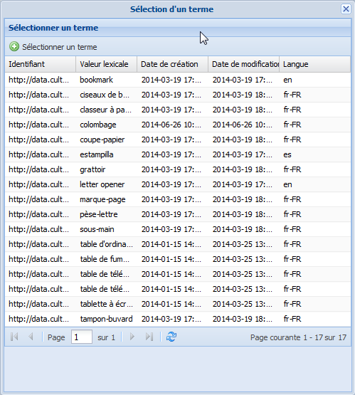

Termes orphelins
Terme orphelin ?⚓
ConceptTerme orphelin⚓
Un Terme orphelin est un terme qui n'est associé à aucun Concept.
RéglementaireOù les trouver ?⚓
Les Termes orphelins sont automatiquement rangés dans un répertoire, nommé Termes orphelins, dans le dossier du Vocabulaire :
Si aucun orphelin n'existe dans le vocabulaire, alors le répertoire correspondant n'existe pas non plus.
Rattachement des orphelins⚓
Il existe deux manières de rattacher un Terme orphelin à l'arborescence des concepts :
l'associer à un
Conceptexistant,créer un nouveau
Conceptdepuis ce terme orphelin.
Les procédures correspondantes sont décrites ci-dessous.
Association d'un Terme orphelin à un Concept existant⚓
ProcédureAssocier un Terme existant (orphelin) à un Concept⚓
Cliquez sur le bouton
Ajouter un termedans la zone d'édition duConcept.Un menu déroulant s'affiche.

Sélectionnez l'option de votre choix.
Truc & astuceDétails⚓
Terme préférentiel / Sélectionner un terme existantTerme non préférentiel / Sélectionner un terme existant
La fenêtre
Sélection d'un termes'affiche.RéglementaireFenêtre Sélection d'un terme⚓
La liste des termes disponibles (termes orphelins) est paginée, avec la possibilité de naviguer de page en page ou d'aller directement à une page donnée.
Par défaut, les termes sont triés par ordre alphabétique. Cliquez sur un titre de colonne pour inverser l'ordre de tri.
Cliquez sur la ligne du terme de votre choix, puis cliquez sur

Sélectionner un termeen haut de la fenêtre.Le
Termeest sélectionné ; il est ajouté à la liste des termes duConcept.
Cliquez sur

Enregistrerpour sauvegarder les modifications apportées auConcept.
Création d'un Concept à partir d'un Terme orphelin⚓
ProcédureCréer un Concept à partir d'un Terme orphelin⚓
Cliquez sur le bouton
Créer un concept depuis ce termedu Terme orphelin concerné.ComplémentEn savoir plus...⚓
Pour savoir comment afficher un terme dans la zone de travail : Édition d'un Terme
Un onglet
Nouveau concepts'affiche dans la zone d'édition du vocabulaire. Le Terme orphelin est déjà leTerme préférentielde ce nouveauConcept.
Cliquez sur le bouton
Enregistrerpour créer le nouveauConcept.Le
Conceptest créé.Si l'option
Concepts TT par défautde la Fiche vocabulaire de votre thésaurus est cochée, alors le nouveau Concept devient un TT dans l'arborescence des concepts.Si l'option
Concepts TT par défautde la Fiche vocabulaire de votre thésaurus n'est pas cochée, alors, le nouveau Concept est classé dans lesConcepts orphelins.